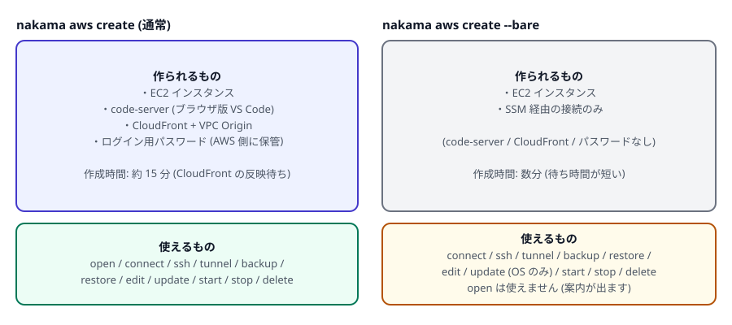

第 4 章 開発環境を作る
いよいよ開発環境を作ります。1 人で何台でも作れます (用途ごとに分けると便利です)。
1. まず 1 台作ってみる
PowerShell で実行
nakama aws create --name dev01 --instance-type t3.medium完了すると、次のような情報が表示されます。
instance created
name : dev01
instance_id : i-0123456789abcdef0
url : https://d111111abcdef8.cloudfront.net
password : (use `nakama aws info dev01 --show-password`)時間の大半は、正面玄関 (CloudFront) の設定が世界中に反映されるのを待つ時間です。実行中は進行状況が順に表示されます。完了するまで PowerShell のウィンドウを閉じたり Ctrl+C を押したりしないでください。
途中で止めてしまった場合は nakama aws list で状態を確認し、中途半端な環境が残っていれば nakama aws delete <名前> --force で片付けてから作り直します。
この待ち時間が惜しい場合は、軽量版 (--bare) を使うと数分で作れます (ブラウザからは開けなくなります)。
作れたかどうかは list で確認できます。
nakama aws listNAME INSTANCE_ID STATE TYPE INSTANCE_TYPE DISTRIBUTION_DOMAIN
dev01 i-0123456789abcdef0 running VSCODE t3.medium d111111abcdef8.cloudfront.net詳しい情報は info です。
nakama aws info dev01name : dev01
instance_id : i-0123456789abcdef0
state : running
instance_type : t3.medium
eni_id : eni-0123456789abcdef0
security_group_id : sg-0123456789abcdef0
vpc_origin_id : vo_abc123
distribution_id : E1234567890ABC
url : https://d111111abcdef8.cloudfront.net
code_server_ver : 4.104.2
password : (use --show-password to reveal)使い始める準備はこれで完了です。開き方は第 5 章で説明します。
2. 名前のルール
--name に使えるのは次の形式です。
- 小文字の英数字とハイフン (
-) のみ。大文字・記号・日本語は使えません - 先頭と末尾は英数字 (ハイフンで始めたり終わったりできません)
- 長さは 2〜32 文字
- 次の 5 つは予約語で使えません:
start/stop/status/restart/suggest(nakama aws tunnelのサブコマンド名と区別できなくなるため)
dev01、api-work、ml-gpu のように「用途 + 番号」にしておくと、複数台を運用するときに分かりやすくなります。
3. 大きさ (インスタンスタイプ) の選び方
--instance-type は AWS の仮想サーバーの「型番」です。CPU とメモリの量が決まります。
| 例 | 目安 |
|---|---|
t3.small | 軽い編集や小さなスクリプト中心。メモリは少なめ |
t3.medium | 最初はここから。一般的な Web 開発ならまず足ります |
t3.large / m6a.xlarge など | ビルドが重い、コンテナを複数動かす、メモリを多く使う場合 |
t4g.medium など (末尾 g) | ARM (Graviton) 版。同じ性能でも安価なことが多いですが、一部のソフトが ARM 非対応の場合があります |
大きさは nakama aws edit <名前> --instance-type <型番> であとから変更できます (第 6 章)。ただし ARM (t4g など) と Intel/AMD (t3, m6a など) の間の変更はできません。ディスクの中身が別の CPU 向けに作られているためです。迷ったら Intel/AMD 系 (t3) から始めると無難です。
4. パスワードの扱い
ブラウザから開くときのログインパスワードは、作成時に自動生成され、AWS の SSM Parameter Store (AWS 側の設定・秘密情報の保管庫) に暗号化されて保管されます。あなたのパソコンには保存されません。
nakama aws info dev01 --show-password # 必要なときだけ表示する
nakama aws create --name dev02 --instance-type t3.medium --show-password # 作成時に表示するnakama aws open はパスワードの自動入力までやってくれます (第 5 章「ブラウザで開く」)。パスワードを手で入れる必要があるのは、別の端末のブラウザから開くときなどです。
5. code-server が要らない場合 (--bare)
デスクトップ版の VS Code や JetBrains、あるいはターミナルだけで作業するなら、ブラウザ版 VS Code (code-server) と正面玄関 (CloudFront) は不要です。--bare を付けると、それらを作らずにサーバー本体だけを用意します。
PowerShell で実行
nakama aws create --name box01 --instance-type t3.medium --bareinstance created
name : box01
instance_id : i-0123456789abcdef0
kind : bare (no code-server / CloudFront)
access : nakama aws ssh setup box01 | nakama aws connect box01
create と --bare の違い。 --bare は作成が速く、CloudFront と WAF の分の料金もかかりません。代わりにブラウザからは開けません。connect (ターミナル) / ssh (手元のエディタ) / tunnel (ポート転送) が使えます。list では TYPE 列が BARE と表示されます。open を実行すると、代わりに ssh setup や connect を使うよう案内するエラーになります。
--bare と --code-server-version (この章の最後で説明する、ブラウザ版 VS Code のバージョンを固定するオプション) は同時に指定できません。code-server を入れないため、バージョン指定に意味がないからです。
6. Kiro CLI と Kiro Crew (既定で導入)
create で作った環境には、Kiro CLI と Kiro Crew、そして Crew の gateway サービスが自動で入ります。--bare でも同じです。追加の指定は要りません。
PowerShell で実行
nakama aws create --name dev01 --instance-type t3.medium # Kiro も入る
nakama aws create --name dev02 --instance-type t3.medium --no-kiro # 入れない入るものは次の 3 つです (すべて ubuntu ユーザーとして導入されます)。
- Kiro CLI (公式インストーラで
~/.local/binへ) - Kiro Crew
- Crew の gateway サービス (systemd に登録され、再起動後も動きます)
あわせて ~/.bashrc に export PATH="$HOME/.local/bin:$PATH" が追記されます (既にあれば追記しません)。これにより、環境にログインすれば kiro-cli がそのまま使えます。
導入はされますが、サインインは自動化できません。最初に 1 回だけ、環境の中で次を実行してください。
nakama aws connect --tty dev01 kiro-cli login --use-device-flow表示される確認コードとURLで承認します。--tty を付けるのが大切です。付けないと、出力がコマンドの終了後まで表示されず、コードが見えないまま止まって見えます (その場合は Ctrl-C で中断し、--tty を付けて実行し直してください)。先に nakama aws connect dev01 で環境に入ってから kiro-cli login --use-device-flow を実行しても構いません。
Crew の gateway は環境の localhost:5476 だけで待ち受けます (外部には出ません)。手元のブラウザから見る場合はポート転送します。
nakama aws tunnel dev01 -L 5476:5476ネットワークの都合などで Kiro の導入が失敗しても、環境自体は作成され、そのまま使えます。その場合は次で同じ手順をやり直せます。
nakama aws setup rerun dev01 --preset kiro導入のログは環境側の /var/log/nakama-userdata.log に残ります。
7. 初期セットアップを自動化する
作成した直後に、必要なツールの導入や設定を自動で行えます。3 つの方法があり、プリセット → dotfiles → セットアップスクリプトの順に実行されます。実行ユーザーは ubuntu です。
| オプション | 内容 |
|---|---|
--preset <名前> |
nakama に同梱されたレシピを適用します。現在使えるのは kiro (Kiro CLI と Kiro Crew の導入、gateway の常駐登録)。この内容は既定で入るので、通常は指定不要です (前節)。失敗時のやり直しや --no-kiro で作った環境への後入れに使います |
--dotfiles <git の URL> |
設定ファイル集のリポジトリを ~/.dotfiles に取得し、install.sh / setup.sh / bootstrap.sh のいずれかがあれば実行、無ければ設定ファイルをホームにリンクします |
--setup <ファイル or https の URL> |
好きなシェルスクリプトを実行します。ローカルのファイルを指定すると、その内容が転送されて実行されます |
PowerShell で実行
nakama aws create --name dev02 --instance-type t3.medium --preset kiro
nakama aws create --name dev03 --instance-type t3.medium --setup .\setup.sh
nakama aws create --name dev04 --instance-type t3.medium --dotfiles https://github.com/me/dotfiles.gitあとから実行したい場合、あるいは失敗して再実行したい場合は setup rerun を使います。
nakama aws setup rerun dev01 --setup .\setup.sh
nakama aws setup rerun dev01 --preset kiroサーバー自体は作成できているため、セットアップの失敗で全体を巻き戻すことはしません。失敗した場合は警告と再実行コマンドが表示されます。実行ログはサーバー上の /var/log/nakama-provision.log に残るので、nakama aws connect <名前> で入って確認できます。
nakama aws connect dev01 sudo tail -n 50 /var/log/nakama-provision.log--setup に渡すのは Linux (Ubuntu) の bash で動くスクリプトです。Windows のエディタで作ると改行が CRLF になり、環境側で $'\r': command not found のようなエラーになります。VS Code なら画面右下の「CRLF」をクリックして「LF」に切り替えて保存してください。1 行目は #!/bin/bash と書いておきます。
http://の URL は拒否されます (通信途中で内容を書き換えられる危険があるため)。https://を使ってください- スクリプトの中身は nakama が検査しません。信頼できるものだけを指定してください
- 同じスクリプトを 2 回実行しても壊れないように書く (冪等にする) のは、スクリプト作成者の責任です。nakama は指定された順に実行するだけです
8. AWS を操作する権限を持たせる
開発環境の中から AWS を操作したい場合 (CDK や CloudFormation = コードで AWS のリソースを作る仕組みを使うなど)、サーバーに権限 (IAM ロール) を持たせられます。使う予定がなければ、この節は読み飛ばして構いません。
nakama aws create --name ops01 --instance-type t3.medium --with-admin
nakama aws create --name app01 --instance-type t3.medium --with-role my-existing-role| オプション | 意味 |
|---|---|
--with-admin | nakama が管理する共有ロール (AdministratorAccess 付き) を割り当てます |
--with-role <名前> | 既存の任意の IAM ロールを割り当てます (nakama はそのロールを書き換えません) |
この 2 つは同時に指定できません。また、どちらもリソースを作る前に「あなたにロールを割り当てる権限があるか」を確認し、足りない場合は何も作らずにエラーで終了します。
付与されるのは AWS アカウントの管理者権限です。つまり、その開発環境にログインできる人は、実質的に AWS アカウント全体を操作できます。IP 許可リストを最小限にし、パスワードの扱いに注意してください。共同利用の環境では避けるのが無難です。
指定したロールに SSM の権限 (AmazonSSMManagedInstanceCore) が含まれていないと、connect / ssh / tunnel / update や初期パスワードの取得が動かない可能性があります。この場合、実行時に警告が表示されます。
9. code-server のバージョンを固定する
既定では最新版が入ります。特定のバージョンに固定したい場合は次のようにします。
nakama aws create --name dev05 --instance-type t3.medium --code-server-version 4.104.2